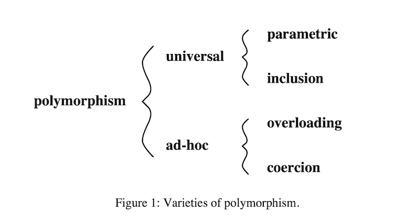

Polymorphisme

pandoc -s --highlight-style zenburn -i -t dzslides -o ./v3/cours/out/5-polymorphism.html ./v3/cours/src/5-polymorphism.md --template ./pandoc/data/default.dzslidesComment peut-on qualifier le système de type de Scala ? (statique/dynamique/fort/faible)
Quels sont les avantages des types ?
Sur la JVM (en Java/Scala), peut-on définir nos propres types ?
Cas facile à typer: opération accepte un seul type de valeur.
Cas problèmatique (addition):
. . .
Comment résoudre le problème ?
code différent pour l’addition des entiers et l’addition des flottants ?
Des opérations qui peuvent avoir plusieurs signatures ?

Un langage est dit être polymorphique si les valeurs / variables peuvent avoir plus d’un type. Une fonction polymorphique est une fonction dont les opérandes peuvent avoir plus d’un seul type. Au contraire, dans un langage monomorphique les valeurs / variables n’ont qu’un seul type.
Classification des types de polymorphisme:

// aussi connu comme `generics` en `Java`
def length[A](list: List[A]): Int = ...
length[Int](List(1, 2, 3, 4)) // = 4On note que: - length prend en entrée des listes de
plusieurs types (Int, String …) -
length n’a qu’une seule implémentation (pour les différents
types en entrée)
class Person(val name: String, val age: Int)
class Employee(name: String, age: Int, val isManager: Boolean)
extends Person(name, age)
val e: Employee = new Employee("John Doe", 34, true)
val p: Person = e
e.isManager == true && e.name == p.name // => trueimplemented in most language with subtyping and inheritance
Class ≈ record with functions and local variables (attributes) and automatic attributes passing
subtyping on records ≈ poor man inheritance (Subclassing in OOP)
On parle de Nominal types pour l’inclusion en Scala/Java.
Avec un exemple illustratif:
// Scala: Nominal equivalence
class A(field1: String, field2: Int)
class B(field1: String, field2: Int)
new A("Hello", 1) == new B("Hello", 1) // => falseScala use nominal equivalence
2 equals types = they have the same structure and same name (nominal types)
Typescript use structural equivalence
2 equals types = they have the same structure (structural types)
On parle de Structural types pour l’inclusion en Typescript/Ocaml/F#/Reason:
// Typescript: Structural equivalence
type A = { field1: String, field2: number }
type B = { field1: String, field2: number }
const a: A = { field: 'Hello', field2: 1 }
const b: B = { field: 'Hello', field2: 1 }
a === b // => trueScala use nominal equivalence
2 equals types = they have the same structure and same name (nominal types)
Typescript use structural equivalence
2 equals types = they have the same structure (structural types)
Typage nominal & sous-typage:
// Scala
class A(f1: String, f2: Boolean)
class B(f1: String, f2: Boolean, f3: Int) extends A(f1, f2)
class C(f1: String, f2: Boolean, f3: Int)
val b: B = new B(f1 = "Hello", f2 = true, f3 = 1)
val a: A = b
val c: C = new C(f1 = "Hello", f2 = true, f3 = 1)
val a: A = c // !!!! ne compile pas, le sous-typage est expliciteTypage structurel & sous-typage:
La coercition est la conversion automatique ou implicite d’un type.
Sur un exemple:
// TS
type A = { f1: string, f2: boolean }
const a: A = { f1: 'Hello', f2: true }
const b: boolean = !a // coercition (automatique au runtime)
const c: string = a.toString() // conversion manuelleEn Java/Scala, possible avec des casts (manuel et au runtime).
coercion is a semantic conversion
statically (automatic or manual) or dynamically (runtime tests)
Un rappel de l’overloading avec un exemple:
Overloading et OOP:
class Printer(state: String) {
def printState(otherText: String): String =
s"state: $state, otherText: $otherText"
def printState(count: Int): String =
s"state: $state, count: $count"
}
val printer = Printer("Hello")
printer.printState("World")
printer.printState(1)same name for different functions (different behaviours)
The context is used to decide which behaviour to use
could be done at compile-time or runtime
Overloading is a syntactic abbreviation

Use-case: Je veux trier les joueurs en utilisant une fonction de tri générique
Si je peux modifier la classe:
case class Player(name: String, rank: Int)
extends Comparable[Player] {
override def compareTo(other: Player): Int =
Integer.compare(this.rank, other.rank)
}
// On adapte la fonction
def sort[A <: Comparable[A]](la: List[A]): List[A] = ???Mais, si on ne peut pas modifier la classe d’origine ?
Si on ne peut pas modifier la classe d’origine:
case class Player(name: String, rank: Int)
object PlayerComparator extends Comparator[Player] {
override def compare(p1: Player, p2: Player): Int =
Integer.compare(p1.rank, p2.rank)
}
// Version simplifiée
val playerComparator: Comparator[Player] =
(p1: Player, p2: Player) =>
Integer.compare(p1.rank, p2.rank)
// On adapte la fonction
def sort[A](la: List[A])(comparator: Comparator[A]): List[A] = ???Pour résumer: - Comparable: - impose une relation
d’héritage (sous-typage) - utilisable que si on peut modifier la classe
- boilerplate à prévoir pour l’implémentation - Comparator:
- se base sur la composition au lieu du sous-typage - utilisable (de
manière ad-hoc) sur des classes non modifiables - se rapproche de
l’overloading
Réponse d’un langage sans OO (ex: Haskell): Typeclass
Alternative aux approches overloading/coercition des languages OO
Comment se présente une Typeclass en Scala
?
Pré-requis: avoir un trait pour le comportement à définir
On peut rajouter du comportement à notre classe:
A l’utilisation:
import player.{sort, Player, given}
val footballTeam: List[Player] = List(
Player(59, "John", 20),
Player(67, "Roger", 22),
Player(45, "Steven", 24)
)
sort(footballTeam)import given importe le comportement défini pour
Player
le compilateur passe automatiquent le
PlayerComparator à sort (IoC)
Question: Est ce que je peux définir une typeclass pour
ordonner les éléments d’un type (en sachant que j’ai besoin d’égalité
pour définir un ordre) ?
Relation de sous-classage entre Order et
Comparator modélisée par héritage (de
trait).
trait Order[A] extends Comparator[A] {
def eq(x: A, y: A): Boolean = compare(x, y) == 0
def lt(x: A, y: A): Boolean
def ltEq(x: A, y: A): Boolean
}Quizz: implémenter la fonction search:
Relation de sous-classage entre Order et
Comparator modélisée par héritage (de
trait).
trait Order[A] extends Comparator[A] {
???
}
def search[A](x: A, list: List[A])(using ordA: Order[A]): Boolean =
list match {
case Nil => false
case head :: tail => (ordA.eq(x, head) || (ordA.lt(head, x) && search(x, tail)))
}Quelle est le résultat des expressions suivantes ?
Scala propose dans la librairie standard une typeclass
Ordering et des fonctions de tri:
Scala propose dans la librairie standard une typeclass
Ordering et des fonctions de tri:
// A l'utilisation
import scala.util.Sorting
case class Person(name: String, age: Int)
object Person {
given Ordering[Person] = Ordering.derived
}
val people = Array(Person("bob", 30), Person("ann", 32), Person("carl", 19))
// sort by age
object AgeOrdering extends Ordering[Person] {
def compare(a: Person, b: Person) = a.age.compare(b.age)
}
Sorting.quickSort(people)(AgeOrdering)Implémenter une instance de la typeclass Order pour les
types java.time.LocalDate et
java.time.LocalDateTime. Voir la javadoc pour LocalDate
et pour LocalDateTime.
Implémenter la fonction isInRange qui permet de vérifier
qu’une valeur prise en paramètre est comprise entre les deux valeurs de
la paire prise en paramètre.
Et vérifier la valeur des expressions suivantes:
// val localDate = LocalDate.now()
// val localDateTime = LocalDateTime.now()
// isInRange(localDate, (localDate.minusDays(1), localDate.plusDays(1)))
// isInRange(localDate, (localDate.plusDays(1), localDate.plusDays(2)))
// isInRange(localDateTime, (localDateTime.minusDays(1), localDateTime.plusDays(1)))
// isInRange(localDateTime, (localDateTime.plusDays(1), localDateTime.plusDays(2)))Des questions ?